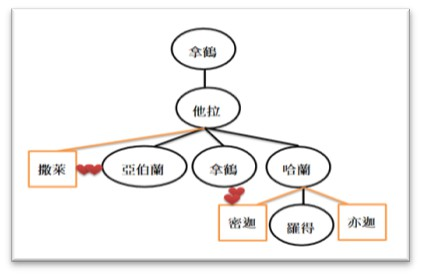
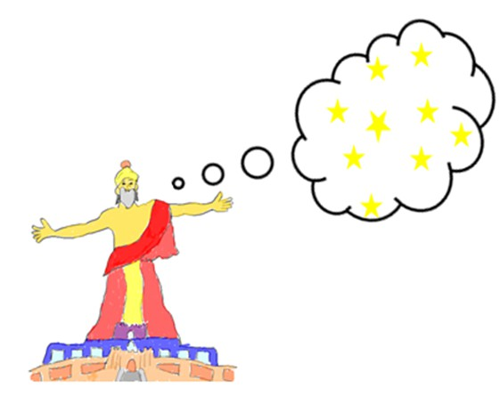
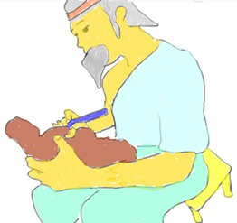
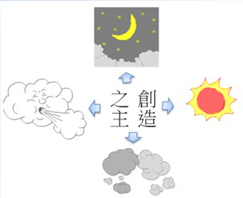
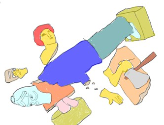
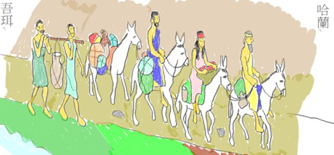

亞伯蘭是拿鶴的孫子、他拉的兒子, 又是閃的第九代子孫, 生於吾珥, 是迦勒底地區的首都和商業的中心, 也是拜月神的中心. 在洪水之後, 人並沒有歸向神, 反而開始為自己製造偶像, 拜偶像; 不過, 在亞伯蘭小時候有流傳一些神奇的故事, 致使他從偶像林立的環境中, 決意 敬拜獨一的真神.
據史料所載, 亞伯蘭出生後的前 10 年都住在這裡. 據說亞伯蘭的幼年時代, 當時的國王寧錄 ( King Nimrod )因聽信星相家預言亞伯蘭 將砸碎所有的偶像, 與寧錄對抗, 於是寧錄下令殺死所有男嬰, 以免預言應驗. 因此, 亞伯蘭的父親為了救他, 把他藏在某個山洞裡, 直到 七歲. 亞伯蘭長大後, 果然砸碎所有的偶像, 後被國王逮捕, 並下令把他燒死, 這時神使地下冒出噴泉, 澆熄火燄.
另外一則傳聞則是, 迦勒底城內充滿了偶像, 主要是拜日、月和女神. 城裡的人都以製造偶像為業, 而亞伯蘭的父親他拉, 也是以製造和販賣 偶像為生的. 有一個夜晚, 亞伯蘭睡不著, 他看到夜空中星光閃爍, 甚為美麗, 因此興起拜星星的念頭. 可是再看月亮,月亮比星星更好看, 要拜星星倒不如拜月亮；這麼一想, 卻又想起日出時太陽的萬丈光芒, 那麼更應該拜太陽; 但是接下來, 他想到陰天時遮住太陽的雲, 那麼雲 是否比太陽厲害？但是風又會把雲吹走？難道該拜風嗎？是誰造了日月星辰和大自然的一切？他忽然之間想通了, 那位創造了這一切的造物主, 才是他要敬拜的對象. 從此他就決定只要敬拜那位創造萬物的真神.
為了想讓父親也離開偶像崇拜, 有一個晚上, 他把店裡的偶像都打爛了. 第二天早上,他拉看到偶像都被打得稀爛, 非常憤怒, 就責問亞伯蘭. 亞伯蘭解釋, “偶像們昨天夜裡吵架, 互相打鬥, 兩敗俱傷, 你看, 這偶像旁還有一把斧頭呢！”他拉氣憤地說, “胡說,偶像怎麼會吵架, 他們 根本連口都張不開. ”亞伯蘭看著父親, 微笑著點頭, 反問父親, “那麼, 為什麼還要拜偶像呢？它們又聾又啞, 沒有一點能力, 為什麼要拜它 們呢？"
既然亞伯蘭決定敬拜獨一真神, 又跟父親有了不再拜偶像的默契, 當他拉在180歲左右, 也就是亞伯蘭五十歲的時候, 神乎召亞伯蘭離開吾珥. 那時的亞伯蘭, 已娶了他同父異母的妹妹撒萊為妻; 因此, 由他拉帶著亞伯蘭和妻子撒萊、與喪父的侄子羅得一起上路. 到了哈蘭, 不知道甚 麼原因, 他們都停留在那裏, 但很顯然與他拉有關係. 當時的哈蘭有最早的大學, 也是個商業旺盛, 十分繁榮的地區, 直到他拉過世, 在亞伯蘭 75歲時, 神才再一次呼召亞伯蘭, 叫他去神指示的地方.